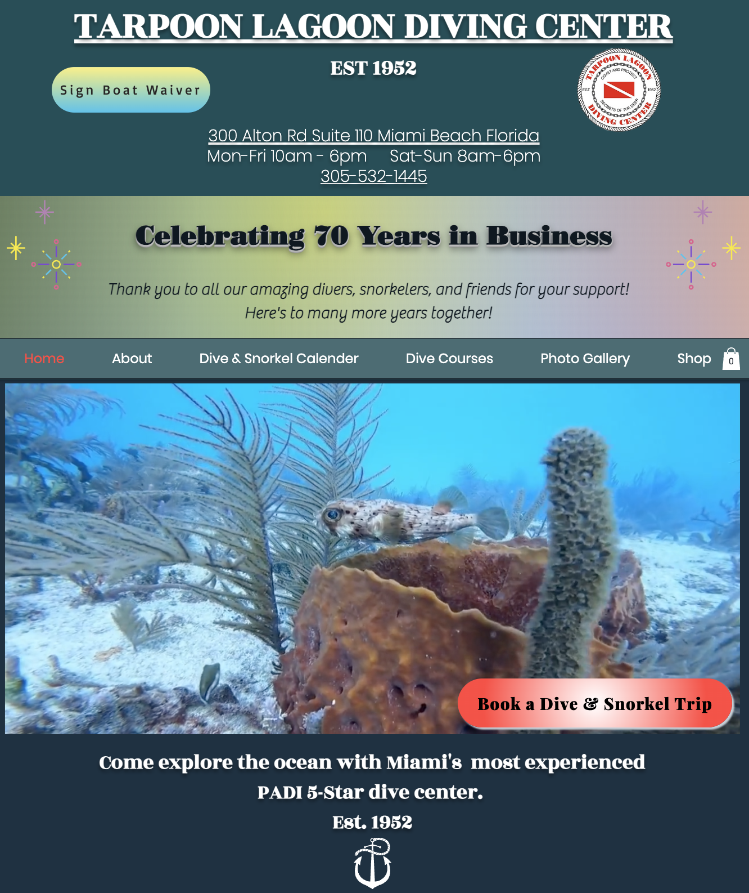
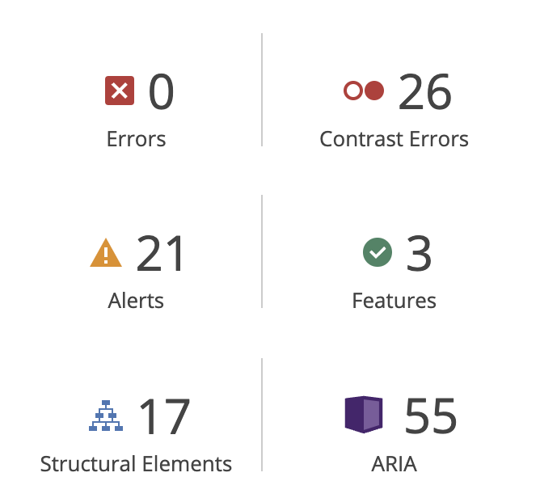

thoughtfulkoala666
Responsive Redesign
Redesigning a Webpage Based on Usability and Accessibility Standards
I chose to re-design the website of a dive center I worked at over the summer, in hopes that they could use my re-design to improve users' experience on their site.
Click here to visit the original site the re-design was based off of:
Tarpoon Lagoon Dive Center is a SCUBA shop based in Miami Beach, FL.
Usability Problems
In order to motivate the re-design of the website, the original website was evaluated for usability and accessibility problems.
In order to evaluate for usability and accessibility, it is important to outline the purpose of the site itself. This site is actually complex in that it serves four main purposes targeting audiences with different needs and experiences. Users of the site use the site for:
- Booking SCUBA Trips
- Enrolling in SCUBA Courses
- Buying SCUBA Gear
- Referencing important links
The following are the core problems that were identified in the context of the purpose of the site:
Confusing Navigation
The main navigation bar contains options of different types, some being dropdowns revealed on hover, and others being plain text. There is no visual indication that an option contains more information, obscuring important navigational features. Additionally, for some dropdown options, the navigation is unintuitive (some items seem to be in the wrong section).
Misleading Naming
One of the core functions of the site is to allow users to book/reserve a dive, but there is no obvious place to do that on that nav bar. Users have to know beforehand that the calendar is interactable and is the only way to reserve a dive. All other "Call to Action"s are obfuscated (more on that later...)
Lack of Hierarchy (Buttons)
All "Call to Action" buttons are overlayed on images, and it is very unclear that the text is actually a button to be used for navigation. Additionally, there is no clear distinction between the buttons used for different tasks on the site (gear-shop, book dive, reserve course, utility link)
Lack of Hierarchy (Buttons) cont.
Some buttons, instead of being placed over images, are placed relative to other non-button elements which make them both difficult to locate, and to identify as a button.
Lack of Hierarchy (Buttons) cont.
Some navigational buttons are implemented as text, entirely inconsistent with the existing standard of using buttons for "Call to Action" purposes. They are usually embedded in long paragraphs of text, which makes them inexcusably difficult to notice/locate for supplying such fundamental functionality to the site.
Minimal Mobile Support
The mobile version of the site contains a lot of overlapping and spacing issues, poorly applying mobile support techniques without properly considering mobile constraints/layouts.
Inconsistent Typography
There are at least 6 different fonts used on the front page which are not only visually unappealing, but further confuse text categorization and hierarchy.
Unintuitive Organization
All of the above problems, combined with general layout decisions make it very difficult for any users in one of the four audiences to figure out which parts of the site they should be using and how. There are also organizational problems within sections targeted toward user-groups, for example: divers are not offered any clues as how to find courses that match their skill level (very advanced courses listed next to very basic courses).
In addition to identifying usability problems manually, the website was also run through the WebAIM WAVE tool to assess potential accessibility problems:
All low-contrast errors that were reported were examined and determined to be a case of poor CSS styling- as the background was detected as "white" where practically the background is a much darker and high-contrast color. The alerts primarily concerned the tag-type of the navigation bar, as they are implemented as headers and not as less significant elements/buttons. This is a case of poor HTML semantics, and while it isn't ideal and slightly inhibits accessibility, the overall accessibility of the site is not greatly impacted. In summary, the current accessibility of the site from an aria/wave-based standpoint is very good, with only a few minor issues that are easily fixable. The main issues lie within the greater usability of the site.
Lo-Fi Prototype
After identifying the usability problems with the website, a series of Low Fidelity (Lo-Fi) prototypes was created, each representing a common type of device a user would interact with the website on. Each design is annotated and describes how each design choice was influenced by one of the usability problems that was addressed. Each successive design incorporates the feedback from the previous device platform, but only shows new information with respect to the device platform to avoid redundancy and clutter.
Visual Design Style Guide
Before transforming the Lo-Fi prototypes into high fidelity (Hi-Fi) prototypes, a visual style guide was created in order to make design work more consistent within each device design, and among device designs.
Hi-Fi Prototype
Using the Visual Design Style Guide, the following Hi-Fi prototypes were constructed:
Responsive Website
Using the Hi-Fi prototypes, the following responsive website was constructed:
Click here to visit the website, or view the website in the window below:
A few notes:
- Not all links are functional for demo-purposes.
- NOTE 2: The menus (dropdown and main nav bar) are automatically expanded/frozen to demonstrate the most informative state, as to avoid heavy JS usage in the demo.
- If you resize this portfolio page, you can see the responsive elements of the website too!